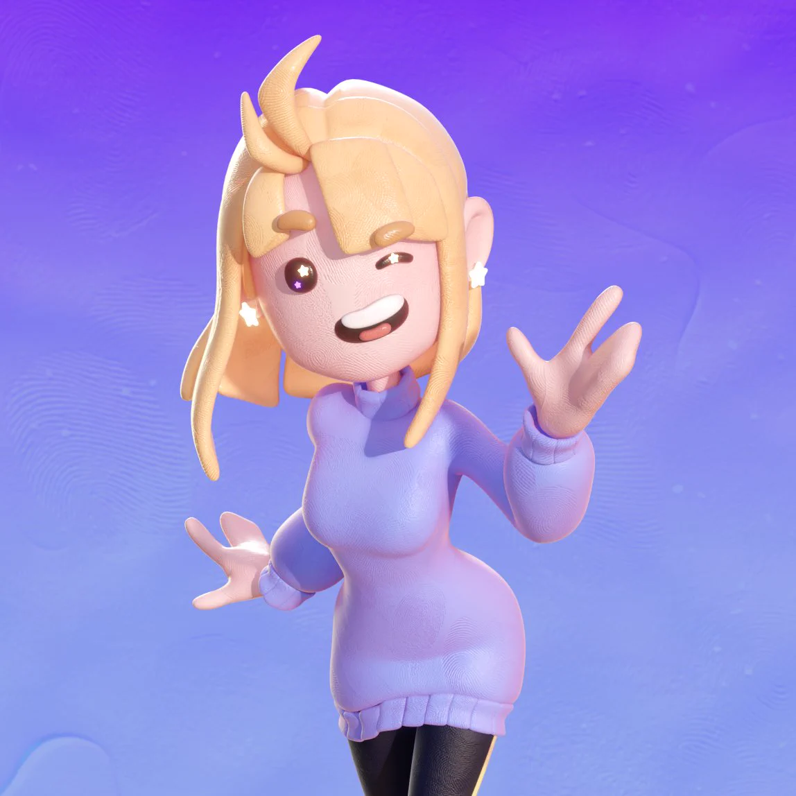
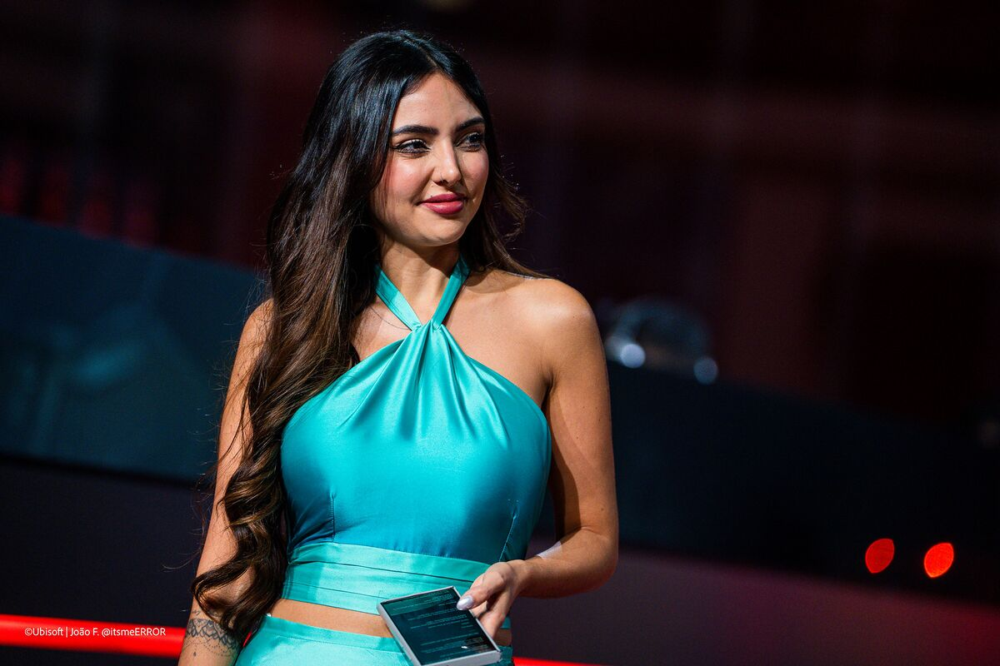

Nagatoki Satou (佐藤 長時), known simply as Gato to his friends and Satoh to everyone else, is the secondary antagonist of CO-WRITERS. Being the originally intended protagonist for the in-story script "Smith & Satoh", he now roams around his school and the city with no idea that his life was supposed to be dramatically much more dramatic than how it ended up being. Instead of being stuck in the middle between two people fighting to be in a relationship with him (remember, he was supposed to be the main character in a corny romcom), he now maintains a stable relationship with his girlfriend, Smith, and their best friend, Silva. How nice.
You may be a little confused as to why I have him listed as the secondary antagonist, though. Why is he the secondary antagonist? Well, that's spoilers, so I can't tell you directly. But I can say that everyone, and I mean everyone, has different responses to being told the truth...

Monica Smith, known simply as Mona to her friends and Smith to everyone else, is one of the minor antagonists of CO-WRITERS. Being the originally intended deuteragonist for the in-story script "Smith & Satoh", she now roams around her school with no idea that her life was supposed to be completely different than how it turned out. Instead of being one of the two people fighting to be in a relationship with Satoh, she now maintains a stable relationship with him and their best friend, Silva. How sweet.
You may be a little confused as to why I have her listed as one of the minor antagonists, though. Why is she an antagonist? Well, that's spoilers, so I can't tell you directly. But I can say that everyone, and I mean everyone, has different responses to being told the truth...

Gracília Santos Silva, known simply as Gracie to her friends and Silva to everyone else, is one of the minor antagonists of CO-WRITERS. Being the originally intended antagonist for the in-story script "Smith & Satoh", she now roams around her school with no idea that her life was supposed to be much more hostile and antagonistic than it ended up becoming. Instead of being one of the two people fighting to be in a relationship with someone she barely knew, she now maintains a stable relationship with her best friends, Satoh and Smith. How cute.
You may be a little confused as to why I have her listed as one of the minor antagonists, though. Why is she an antagonist? Well, that's spoilers, so I can't tell you directly. But I can say that everyone, and I mean everyone, has different res- dahhh, you already heard this twice, I don't need to repeat myself again. You get it.